Un esperimento con le prime iterazioni di Open AI
un progetto (beta) midjourney.
2022 — Open AI, un progetto senza scopo di lucro di ricerca sul tema dell’intelligenza artificiale, fondato - anche - da Elon Musk, nel 2022 ha spopolato in tutto il mondo: il caso Midjourney.
/imagine prompt: [keyword]. Un semplice comando che, date delle keyword che fungono da linea guida, viene elaborato da un’intelligenza artificiale che restituisce una serie di immagini, imparando da quello che le persone chiedono, fanno, apprezzano e ri-elaborano. Ecco cosa fa Midjourney.
Ad Agosto 2022 ho voluto testare questo strumento innovativo, immaginando una ipotetica partnership tra Marvel Cinematic Universe e Wizard of the coast (produttrice del famosissimo gioco di carte e strategia “Magic the Gathering”).
Da questo matrimonio virtuale e creativo, nasce il progetto The Infinite Lands: 6 scenari basati sulle “terre” di Magic, contaminate dalle 6 gemme dell’infinito della saga Avengers dell’MCU.
Un esperimento con le prime iterazioni di Open AI
fyra — mountains of reality
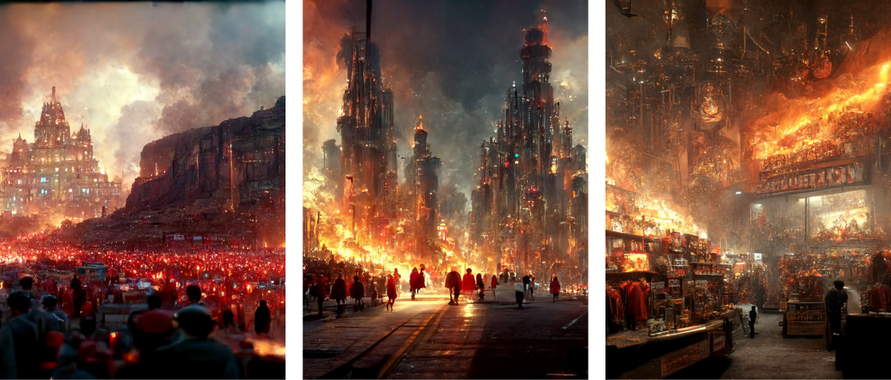 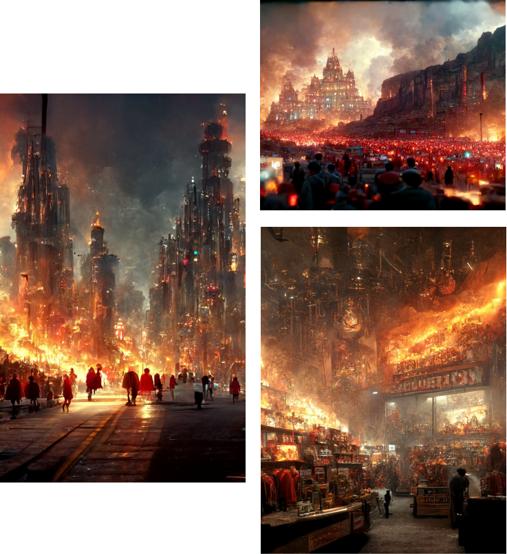Realizzate con Midjourney beta, mix tra montagne, fuoco e immaginazione, Alessio Cardelli - 2023
Un esperimento con le prime iterazioni di Open AI
tessa — islands of space
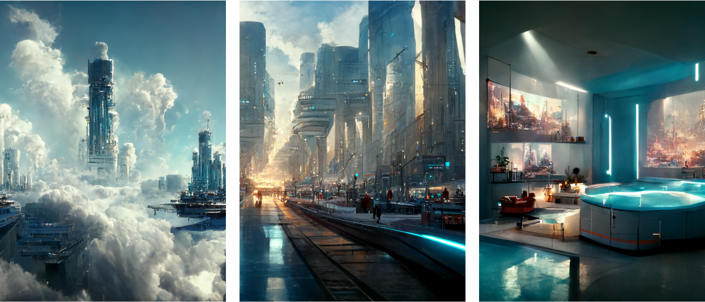 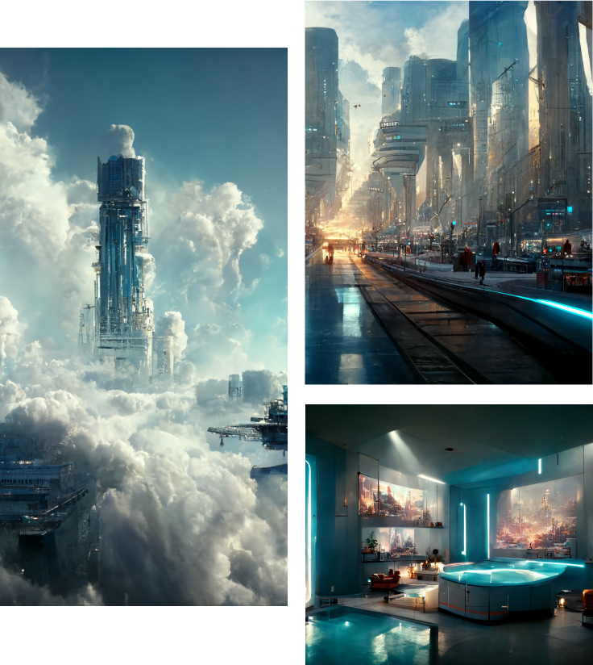Realizzate con Midjourney beta, mix tra aria, isole volanti e luci al neon, Alessio Cardelli - 2023
Un esperimento con le prime iterazioni di Open AI
agath — forests of time
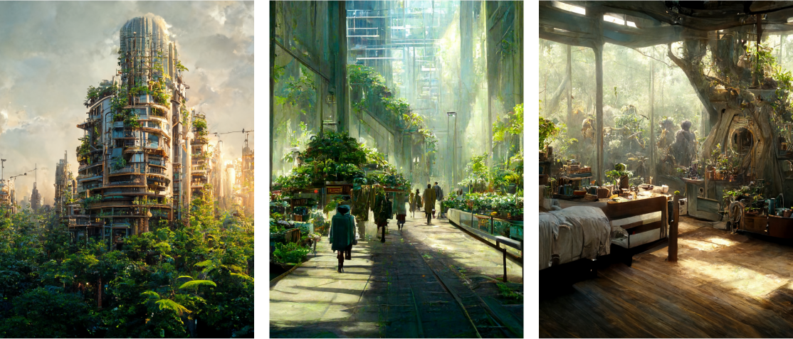 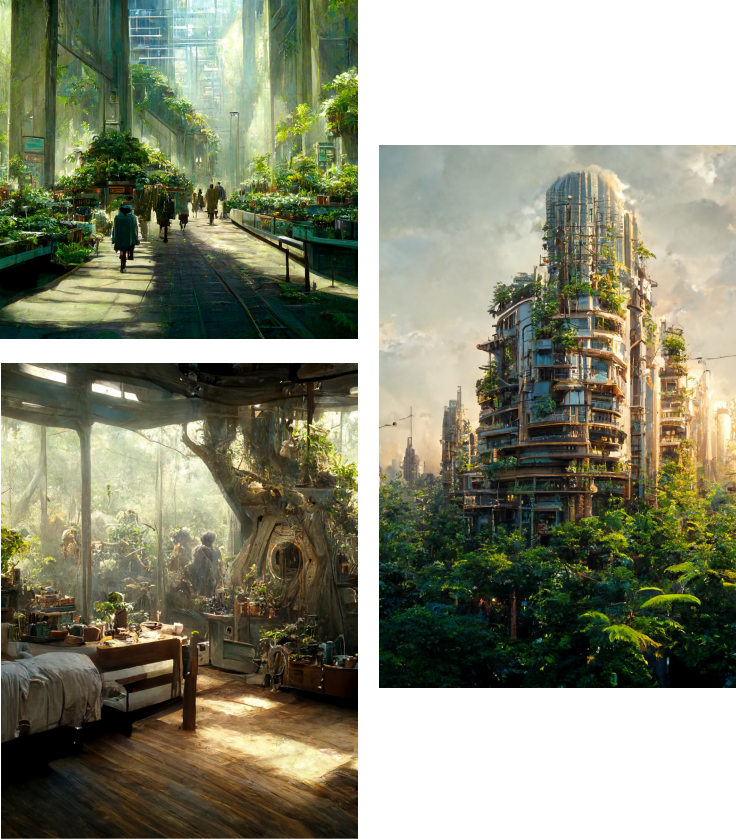Realizzate con Midjourney beta, mix tra verde incontrollato, piante e sottobosco, Alessio Cardelli - 2023
Un esperimento con le prime iterazioni di Open AI
orbea — swamps of power
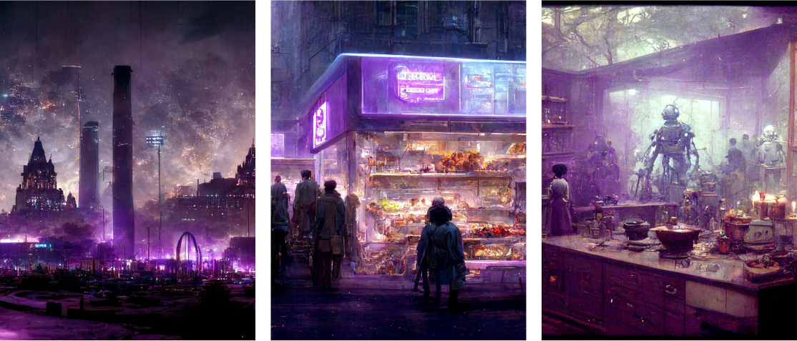 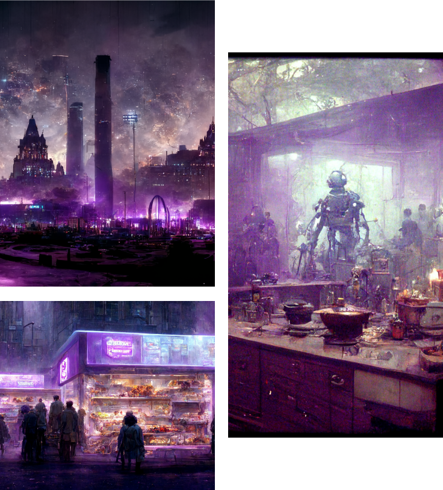Realizzate con Midjourney beta, mix tra paura, potere, anime e oscurità, Alessio Cardelli - 2023
Un esperimento con le prime iterazioni di Open AI
vyxa — deserts of mind
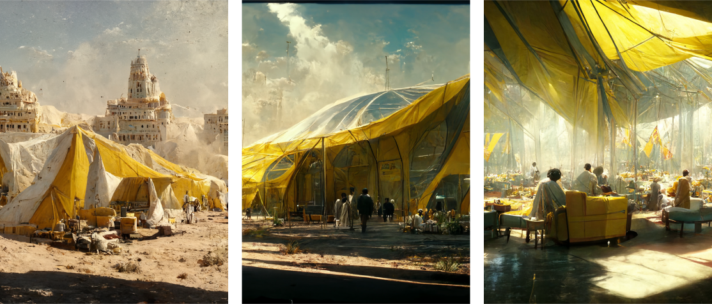 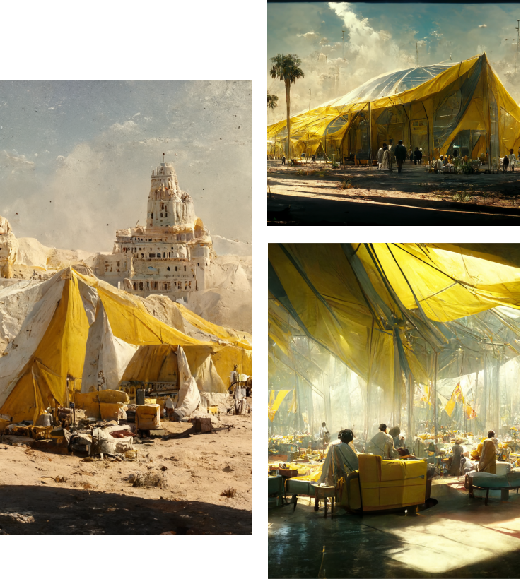Realizzate con Midjourney beta, mix tra deserto, tende, sole e sabbia, Alessio Cardelli - 2023
Un esperimento con le prime iterazioni di Open AI
myr — cities of soul
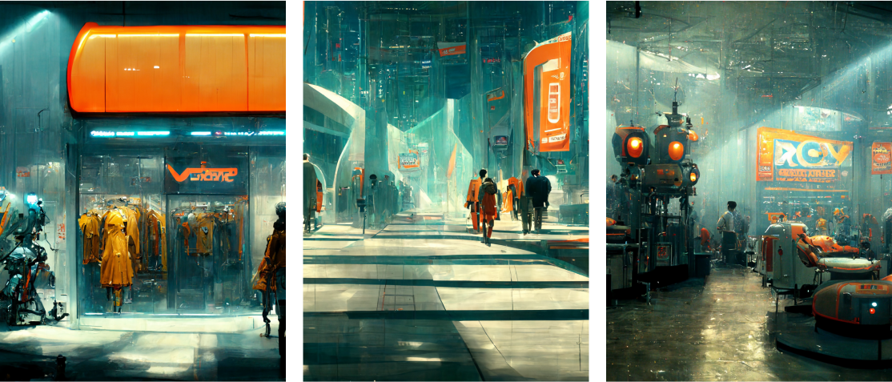 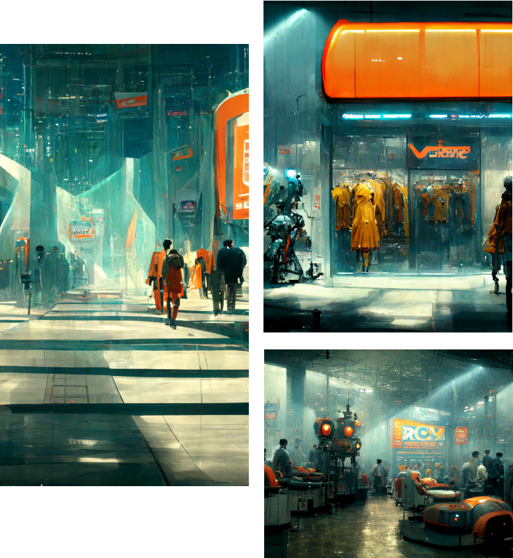Realizzate con Midjourney beta, mix tra automi, città, tecnologia e robots, Alessio Cardelli - 2023